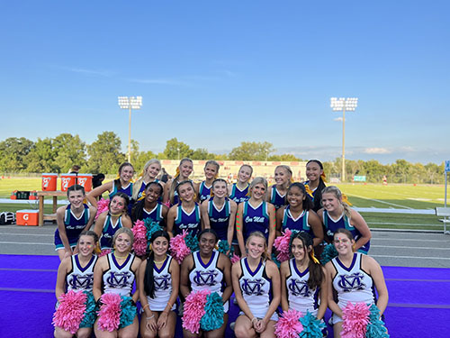
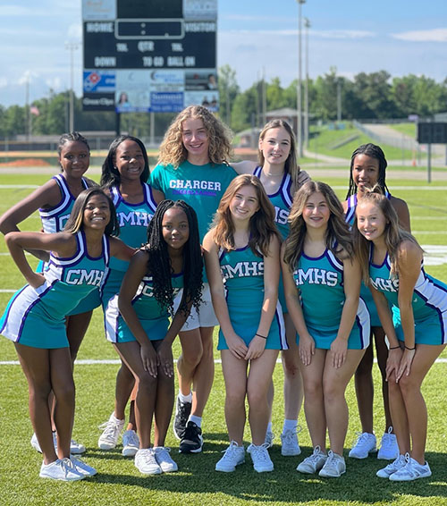
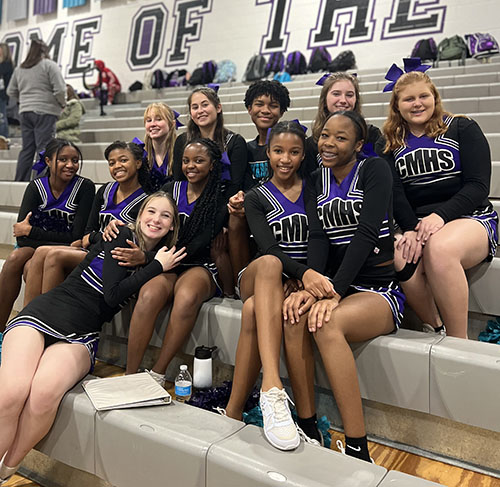
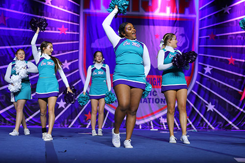
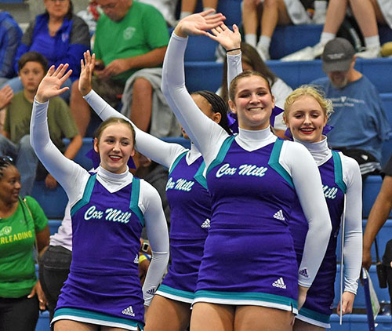

Varsity Football Sideline
JV Football Sideline
Varsity Basketball Sideline

The Cox Mill Cheerleading program has a team for everyone! We offer a total of 6 teams to athlethes. Teams are made up of diverse groups of students that all have one common joy..... cheerleading.
Varsity Football Sideline |
The Varsity Football Sideline team is made up of the best cheerleaders that Cox Mill has to offer. These cheerleaders are exceptional athlethes, students, spirit leaders, and overall a great representation of Cox Mill. Varsity Cheerleaders are very involved in the community by hosting events like summer youth camps, winter youth camps, Varisty cheer compeitions, and volunteer work. Varsity athlethes are required to perform at all home and away games that take place on Friday nights. They perform band dances, cheers, chants, and crowd engaging games. They perform at prep rallys and are leaders at the school. This team is made up of students from grades 9th-12th. |  |
JV Football Sideline |
The JV Football Sideline team is made up of great athlethes who are ready to grow and florish as Cox Mill Cheerleaders. These cheerleaders are expectional athlethes, students, spirit leaders, and overall have a great desire to grow there skills. Varsity Cheerleaders are very involved in the community hosting events like summer youth camps, winter youth camps, Varisty cheer compeitions, and volunteer work. Cheerleaders are required to cheer all home games on Thursday nights. They perform cheers, chants, and crowd engaging games . They perform at prep rallys and are leaders at the school. This team is made up students from 9th-11th. |  |
Varsity Basketball Sideline |
The Varsity Basketball Sideline team is made up of ahtlethes who have very spirit and enthusaisum. These cheerleaders are outstanding athlethes who are comitted to cheering the very long cheer season. These athlthes perform during timeouts and throughout all 4 quarters of the game. Cheerleaders are required to cheer at every home and away game. Varsity Basketball cheerleaders cheer at girls varsity basketball and boys varsity games. Basketball cheer is all about performance from our cheerleaders, CMHS cheerleaders perform during quarter changes, timeouts, in the stands, and call out of our basketball team. This team is made up of students from 9th-12th. | |
JV Basketball Sideline |
The JV Basketball is made up of athlethes who are very dedicated and eager. These cheerleader are passionate aboout bettering there abilites and talent. JV cheerleaders have to comitted to a long basketball sideline. Cheerleaders are expected to cheer at all home games for JV girls basketball team and JV boys basketball team. Basketball cheer is all about performance, cheerleaders perform throughout timeouts through all 4 quarters of the game. |  |
Varsity Gameday Compeition |
The Varsity Gameday Compeition is made of both JV and Varsity cheerleaders. The point of gameday competition is to duplicate the engergetic and lively energy from our sideline and bring it on the mat to compete. The rotuine for gameday is broken up into 4 sections band dance, situational, chant, and fight song. The Gameday team practices once a week to work on sharp motions, technique, and spiriting. |  |
Varsity Traditional Comptition |
The Varsity Traditional Compeition team is made up of only varsity cheerleaders. The point of traditional is to mix all-star cheer and school cheer. The traditional routine is made up of tumbling, jumps, stunting, dance, pryamid, and chant. The Traditional team practices once a week (sometimes more) to work on motions, technique, energy, and perfection. |  |
Cox Mill Cheer program is truly a family. The athlethes spend long hours together anf build a very strong bond that will last a lifetime. CMHS cheer bring in a lot of different students from different backgrounds and upbringings which gives everyone an opputunity to flourish. The CMHS cheer team feels like a home, and hope your ready to join ours!